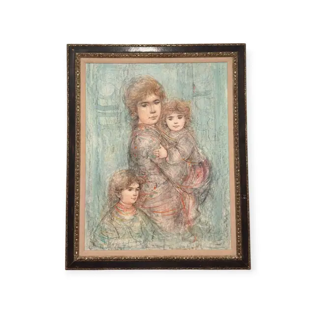
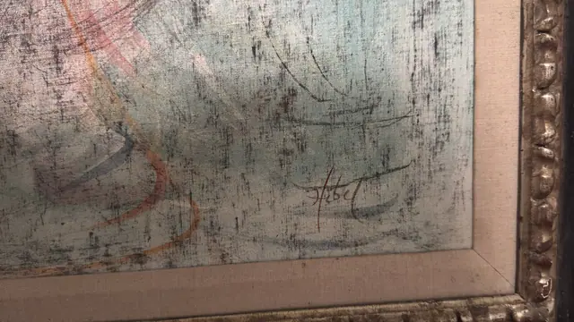
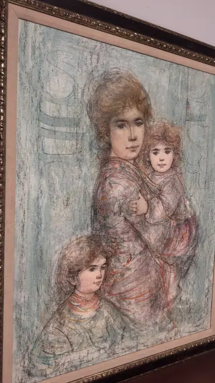
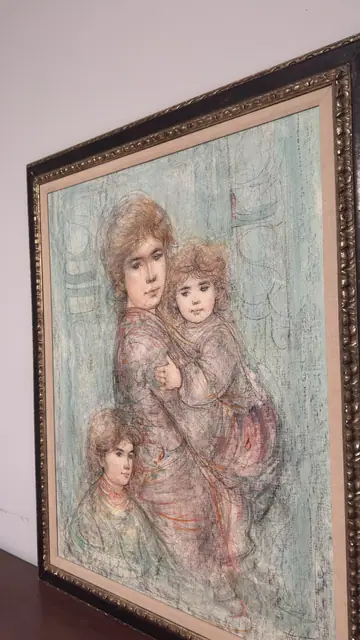
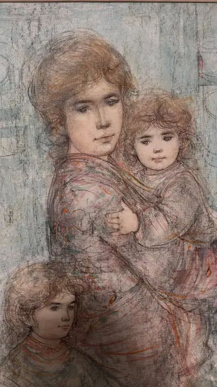
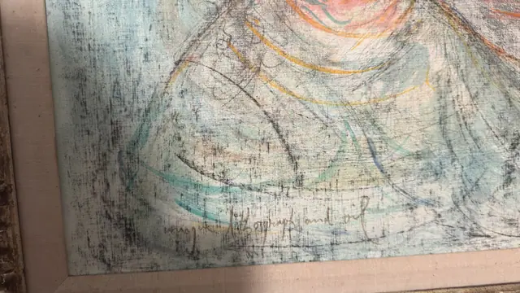

Paintings & Prints
Hibel Mother and Two Children, Hand-Painted Lithograph, Signed, Framed
Edna Hibel · third quarter of the 20th century
Price Upon Request






About the Item
Hibel. Three figures - a young woman, a curly-haired toddler on her shoulder and an older child at her hip - are drawn in fine sepia and charcoal line over a chalky pale-turquoise ground. Colour is applied thinly and dryly so the coarse canvas weave shows through everywhere, giving the whole image a frescoed, faded-tapestry look. Coral, rose and ochre accents pick out the drapery folds and the children's hair, while faint architectural verticals float behind the group. The handling is deliberately unfinished, with pentimenti and open drawing left visible around the edges. Medium: lithograph with hand-applied oil colour on canvas-textured support. Signed lower right of the image, in reddish-brown, reading "Hibel". Inscribed on the reverse or mount: unique lithograph and oil. Condition: Surface is dry and matte with pronounced canvas texture; no tears or losses seen. The gilt frame shows scattered rubbing and small losses to the high points of the ornament.
Details
- Creator:
- Edna Hibel
- Creation Year:
- third quarter of the 20th century
- Dimensions:
- Height: 47.5 in (120.65 cm)
Width: 37.5 in (95.25 cm)
outside of frame - Medium:
- lithograph with hand-applied oil colour on canvas-textured support
- Period:
- 20Th
- Condition:
- Offered in the condition shown in the photographs.
- Reference Number:
- VO-158
- Documentation:
- no certificate photographed; the medium is declared in the artist's own hand on the face of the work
- Gallery Location:
- unique lithograph and oil